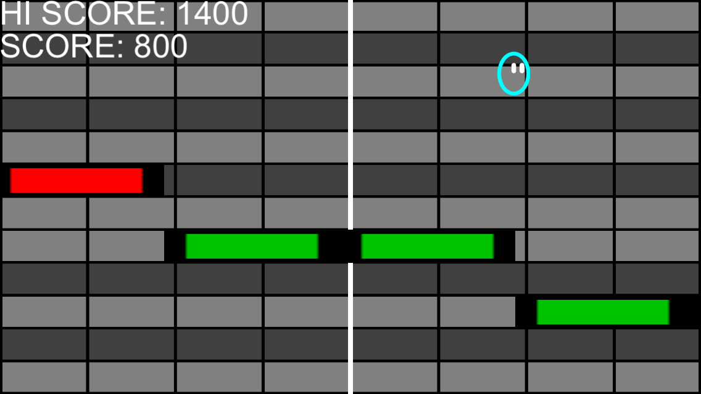

Piano Roll Jump
Piano Roll Jump is an iOS game I developed in 2016, though I had the
idea for the game several years earlier.
Piano Roll Jump is a simple but intense platforming experience.
The notes from the background music move right to left like they would
in a piano roll, and you must jump to touch as many notes as you can to
increase your score. Falling will lower your score.
Tap the screen to jump and double jump. Use the accelerometer to move
left and right, and increase or decrease gravity for a high level of
precision control. Master the controls and become a platforming
champion.
The background music was all written using retro video game hardware for
a nostalgic 8-bit aesthetic.
